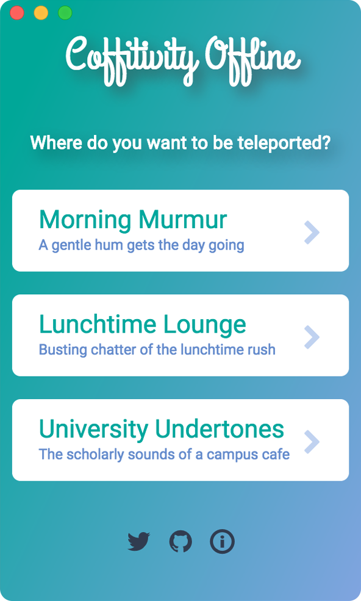

Hello world! I'm Coffitivity for Desktop.
I am
Coffitivity.com's
open-source cousin, and I run without the internet. I recreate ambient sounds of cafes to boost your creativity, so you can produce better work.
Download
This app is an open-source collaboration with
@Coffitivity.
Fork on GitHub
Share the love via Twitter
Share on Facebook
with
by
@siwalikm
©2017
Split Template
by
One Page Love